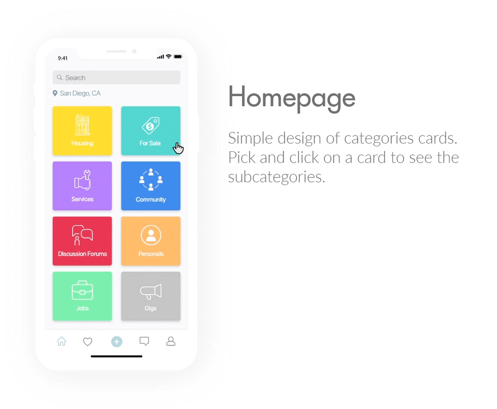

Craigslist Redesign
"Visual Redesign with a minimalist concept"
Goal: Redesign Craigslist website with a clean & minimal concept for better user experience and visual.
Date: February 2018
Duration: 5 days
Skills: UX Design, Prototyping, Interaction Design, Wireframing
Tools: Adobe XD
Role: UI/UX & Interaction Designer
Project Summary
Craigslist is one of the popular classified advertisements websites. A lot of people are still using it these days, but the websites' visual was a little bit outdated. The main function of Craigslist is to provide a platform where people could post an advertisement and also find an available advertisement. There are many categories of ads provided by Craigslist. The goal of the website is brilliant. However, there are some problems mainly caused by the unfriendly and outdated interface. There are too many texts which are unorganized and looks cramped. The presentation of the categories causes the user to be overwhelmed by the amount of text presented with very few white spaces which makes it hard to find what they want quickly.
Pain Points


- There is no visual hierarchy in displaying the information which confuses users about where to look first. Especially regarding the usage of white space in between the different categories section and also between each of the subcategories itself.
- The website looks outdated and unappealing. According to the Standford Persuasive Technology Lab, 46% of site visitors say that a website design shows it's credibility. So design is not merely for the sake of our eyes pleasure, it also represents the image of the company that will decide whether or not you gain the user's trust.
- The nearby location list presentation on the home screen is not efficient and unnecessary . It takes a lot of space and makes the home screen looks more cluttered with those extra texts.
- There's a page where the user could choose their viewing options "all, by owner, or by dealer" but on the next page filter sidebar, these options are present again. The extra page is not necessary and it just adds an extra step for the user to get to the page they want to be.
Solutions

- Redesign the locations tab into a single button. This gives user flexibility to view the locations just when they want to (not unnecessarily presenting all nearby locations).
- Re-organized the category presentation into a more appealing and clean visual. For the mobile version, I divide the category selection into a two-step process by only presenting the category title on the first step. When the user clicks on one of the category cards, it will lead them to the breakdown of each category available.
- Replaced the filter sidebar into a single line menu on top of the product page.
- Getting rid of the "all, by owner, or by dealer" extra page and present them as one of the selections of the filter menu.
- Created a more prominent and more explicit button to contact the owner.
- Place the favorite button on the top left corner of the product image.
- Added a mail icon beside "Mail to friend" button on the posting descriptions. The purpose is to help the user to recognize the button function easily. As we all know, icons are fast to recognize at a glance ― especially the standard icons that people have used and seen before.
- To solve the trust issues users might have when using Craigslist, I add the 'About the seller' section where potential buyers could read more information about the seller and reviews from their previous customers.


Features
Style Guide
To keep the same feeling of the classic craigslist design, I decided to look for a color that is close to the current Craigslist theme which is purple. The final color scheme that I go with is blue. Shades of blue are related to trust and dependability, and it helps with customer loyalty. Which in this case, customer loyalty is essential for a company like Craigslist.